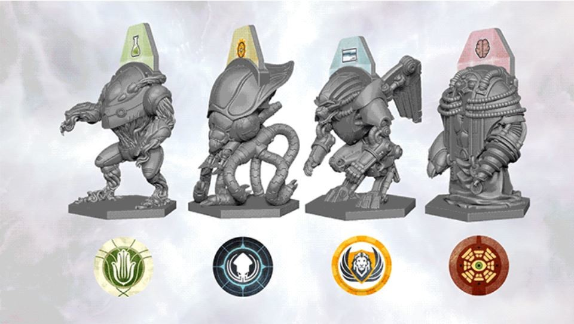
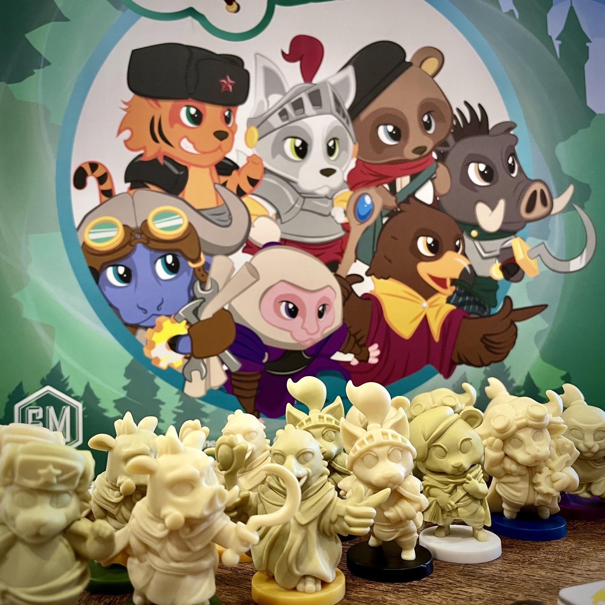
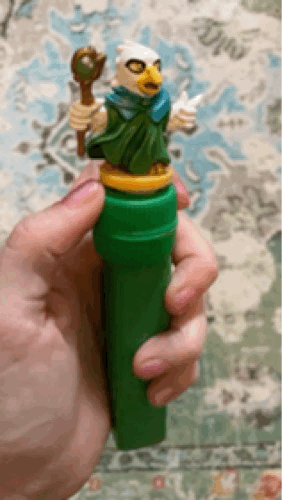
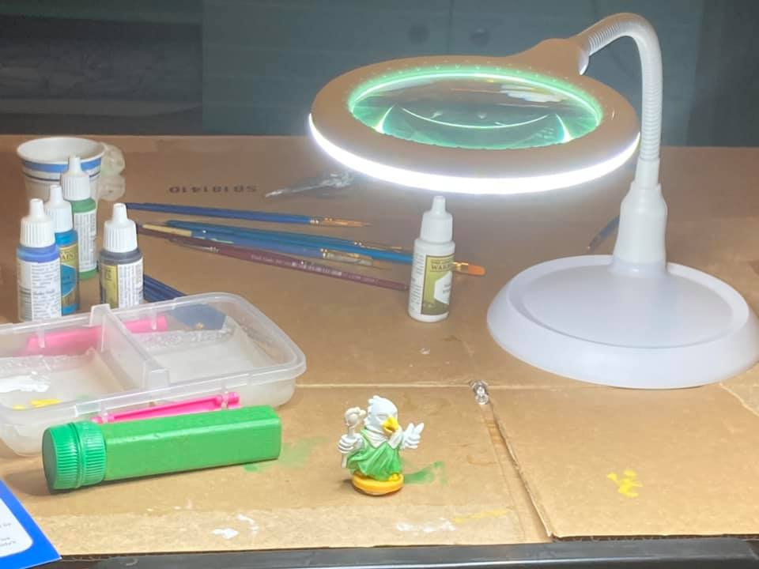
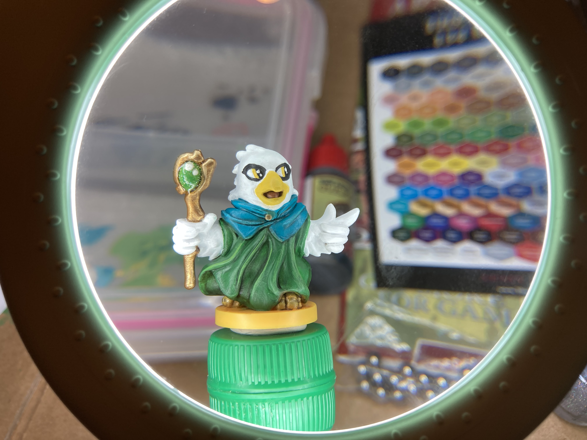

How I got into mini painting and the supplies I needed to get started
After virtual options like Steam and Board Game Arena replaced in-person game nights in early 2019, my games hit the table far less than they once did. Eventually, I saw this as an opportunity to paint my minis. I admit I was intimidated by the idea, particularly because ruining a favorite board game would be a total bummer, but I also didn't want to spend months practicing the skill on a lackluster game that would never see the table.
My stretch goal is to paint the Exosuit Miniatures Set for Anachrony, a time travel, worker placement strategy game that focuses on resource management in a dystopian setting. Because the exosuit minis are far too detailed for a first painting project, I scanned my shelves for something more newbie-friendly.
My Little Scythe and its animal kingdom pairs was, by far, my best option. It's the family version of asymmetrical, engine-building, alternative history game Scythe by local game publisher Stonemaier Games. The relatively large minis (jumbo shrimp?) allow me to practice techniques and rogue ideas with less risk.
Since I plan to use glitter when painting Anachrony, I incorporated glitter into this project. This is where I exercised some artistic license and decided each My Little Scythe mini is carrying or wearing a shimmering magical item, giving me an excuse to practice glitter application to my heart's content! I am also taking minor liberties with some of the colors to match my preference simply because I can.
Supplies Needed for this Project
Brushes
Fancy brushes are not necessary for mini painting. I fished all the decent tiny brushes out of our paint brush bins and set them aside. All of them are from affordable sets like this one.
Primer
Although spray primer is arguiably superior, but I break the rules here and hand brush on this airbrush primer. Spray primer is not practical for a city-dwelling night owl who does not want to spray paint minis outside at 2 am when the mood to get creative hits me. Many mini painters have air brushes, but I am perfectly content hand brushing them all.
Paints
After scouring the Internet for options, I decided this Army Painter set is the best beginner option for the price. I opted for this set because it includes a couple metallic options and some washes to try out. As a newbie, I wanted to maximize my options. The inclusion of turqouise and purple did not hurt!
Wet Palette
These paints dry QUICKLY! A wet palette is essential for keeping the paint wet while painting (and in some climates between sessions). I opted to make my own wet palette using a shallow lidded container, paper towels, and parchment paper. Thin sponges make better wet palletes, but my paper towel setup has caused me no issues.
Rotating handle mount
It is difficult to paint a tiny object while holding it. I noticed a lot of mini painters use handle mounts, but none of them fit my needs. So I made my own rotating handle mount with things I found lying about. All I needed was a wooden block, wood screw or nail, two bottle caps, hot glue, and mounting putty. Click here to check out a haphazard whiteboard sketch.
{kind=link}
For my next mount, the single change I will implement is a thinner block to make room for comfort padding without making it too bulky.
Magic
For the magical elements on each character set I am using heaping amounts of INM Northern Lights nail polish. Perhaps you think this is a bit extra or overkill AND THAT'S FINE.
Magnifier lamp
While it's likely the lighting has been updated in our home since it was built in the late 1800s, that is up for debate. So a snake-neck magnifier lamp is essential for me to see the details.
♥ ♥ ♥ ♥ ♥ ♥ ♥ ♥ ♥ ♥ ♥ ♥
I've finished the Eagle Kingdom minis and have moved on to The Kingdom of Wolves. Hopefully when I've completed painting it, my friends will enjoy the labor I put into them instead of holding them under a magnifying spotlight to illuminate all the mistakes like I do!
